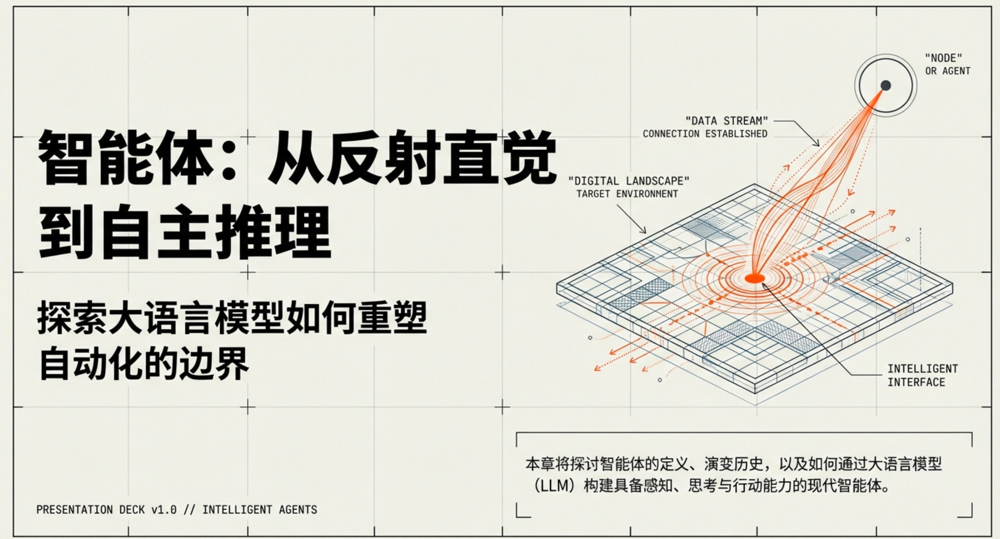
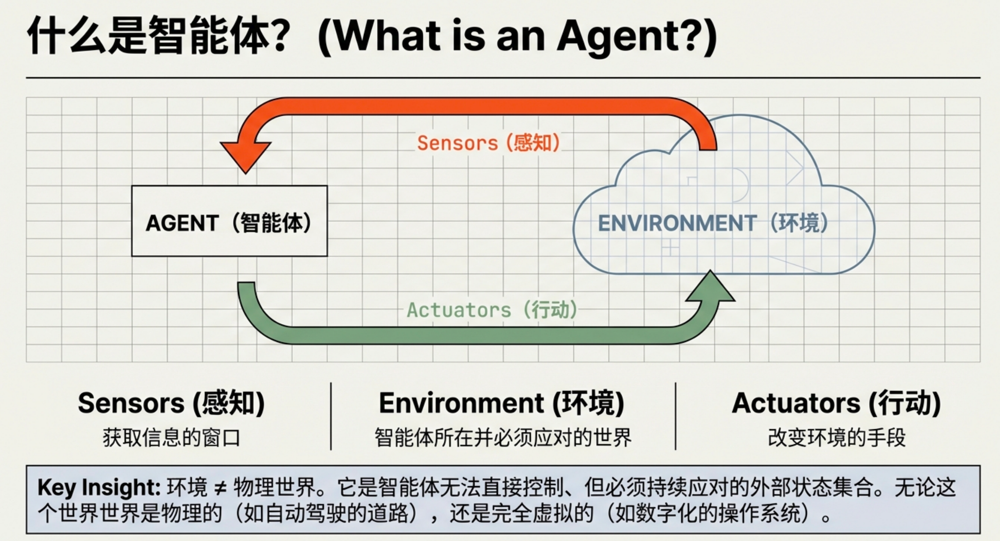
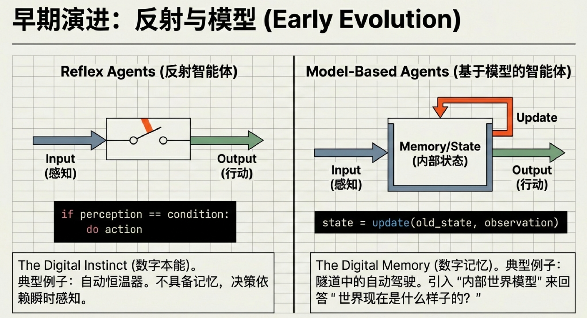
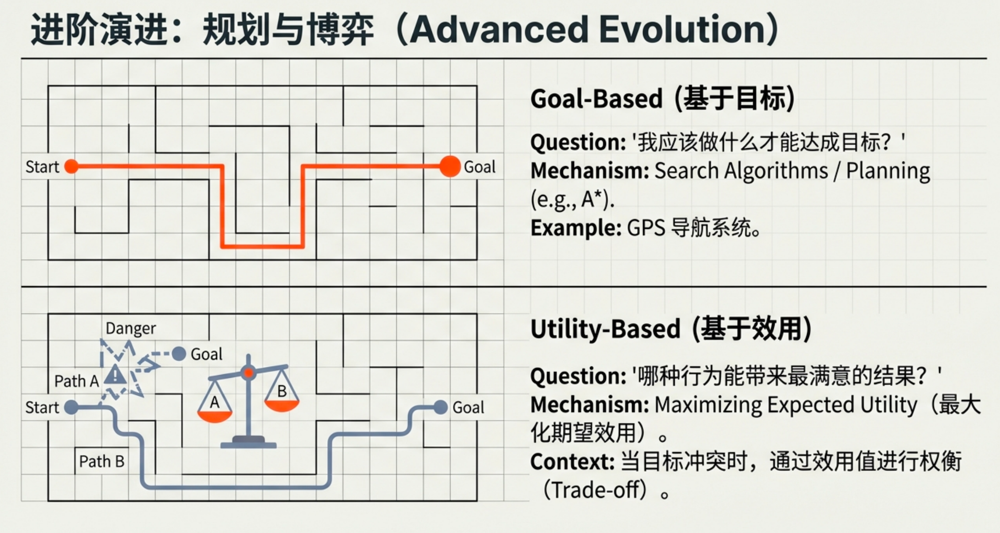
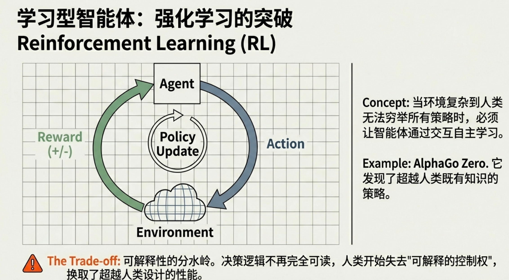
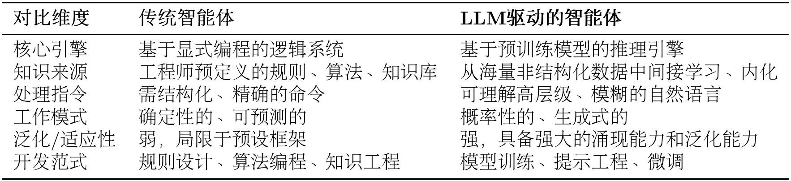
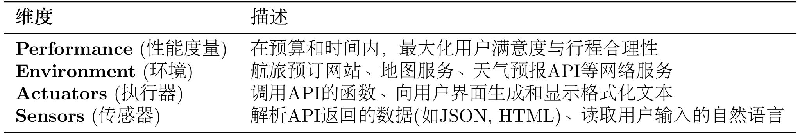
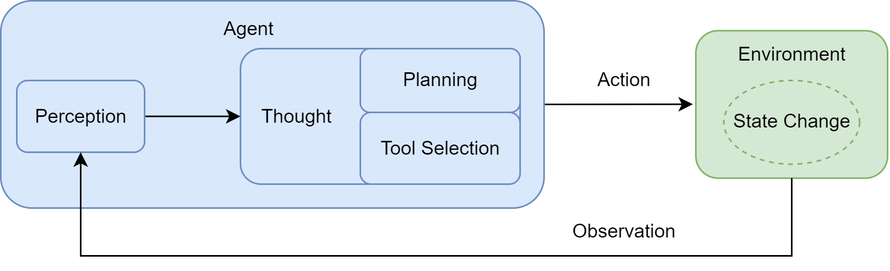

1 初识智能体
本章，我们探讨几个问题：智能体是什么？它有哪些主要的类型？它又是如何与我们所处的世界进行交互的？通过这些讨论，希望能为你未来的学习和探索打下坚实的基础。

1.1 什么是智能体？
在人工智能领域，智能体被定义为任何能够通过传感器（Sensors）感知其所处环境（Environment），并自主地通过执行器（Actuators）采取行动（Action）以达成特定目标的实体。
注意，环境不代表的就是地球，就是现实世界，它是智能体无法直接控制、但必须持续应对的外部状态与变化的集合。在智能体语境下，“环境”并不等同于物理世界，而是一个相对于智能体而言的概念。

环境就是智能体“所在并必须应对的世界”，无论这个世界是物理的，还是完全虚拟的。
1.1.1 传统视角下的智能体
智能体的演变
反射智能体（Simple Reflex Agent）：它们的决策核心由工程师明确设计的“条件-动作”规则构成。经典的自动恒温器便是如此，若传感器感知的室温高于设定值，则启动制冷系统。
这种智能体完全依赖于当前的感知输入，不具备记忆或预测能力。它像一种数字化的本能，可靠且高效，但也因此无法应对需要理解上下文的复杂任务。
这种智能体的优势在于可靠和高效，但其能力严格受限于一个前提，当前感知必须是充分且可信的。一旦这一前提被打破，其决策就会迅速失效。
反射智能体并非没有状态，而是不维护、也不依赖“内部世界状态”；它只根据当前感知做出行动。
反射智能体的决策可以抽象为：
if perception matches condition_i:
do action_i
基于模型的反射智能体（Model-Based Reflex Agent）：智能体在做决策时，通常只能感知到环境的一部分，传感器存在盲区，信息存在延迟，关键对象可能被遮挡。如果智能体只能依据“此刻看到的内容”做出反应，那么当感知不完整时，它将无法维持对世界的连续理解，进而做出危险或不合理的决策。
研究者们引入了“状态”的概念，这类智能体拥有一个内部的世界模型（World Model），用于追踪和理解环境中那些无法被直接感知的方面。它试图回答：“世界现在是什么样子的？”。
基于模型的反射智能体会在内部维护一个关于世界的估计，用以补全当前感知中缺失的部分。这使得智能体能够在短暂失去感知时，仍然基于过去的信息对世界状态做出合理判断。在这一阶段，智能体第一次具备了“记住世界”的能力，其决策开始依赖于一个连续的状态，而非孤立的瞬时输入。
例如，一辆在隧道中行驶的自动驾驶汽车，即便摄像头暂时无法感知到前方的车辆，它的内部模型依然会维持对那辆车存在、速度和预估位置的判断。这个内部模型让智能体拥有了初级的“记忆”，使其决策不再仅仅依赖于瞬时感知，而是基于一个更连贯、更完整的世界状态理解。
基于模型的反射智能体的决策可以抽象为两步：
- 更新内部模型
state_t = update(state_{t-1}, observation_t)- 基于状态选择行动
if state_t satisfies condition_j:
do action_j基于目标的智能体（Goal-Based Agent）：然而，即便能够持续地理解世界，智能体仍然面临一个更根本的问题：在什么情况下应该主动行动？
如果智能体只是在环境变化时被动响应，那么在许多尚未发生但必然到来的情境中，它将无法做出任何准备性行为。现实中的大量任务，恰恰要求系统根据对未来的预期提前行动。
仅仅理解世界还不够，智能体需要有明确的目标。与前两者不同，它的行为不再是被动地对环境做出反应，而是主动地、有预见性地选择能够导向某个特定未来状态的行动。这类智能体需要回答的问题是：“我应该做什么才能达成目标？”。
目标为智能体提供了一个明确的未来参照，使其能够在当前状态下评估不同行动是否有助于接近该目标，并据此进行规划和选择。
在这一阶段，智能体的行为不再仅仅由环境触发，而是开始由对未来结果的预期所驱动。
经典的例子是 GPS 导航系统：你的目标是到达公司，智能体会基于地图数据（世界模型），通过搜索算法（如 A*算法）来规划（Planning）出一条最优路径。这类智能体的核心能力体现在了对未来的考量与规划上。
基于目标的智能体（Goal-Based Agent）的决策可以抽象为：
loop:
obs = SENSE()
s = UPDATE_STATE(s, obs) // 可选：如果有内部模型
if GOAL_TEST(s, goal):
return SUCCESS
plan = PLAN(s, goal, model) // 搜索得到 action 序列 [a1, a2, ...]
if plan is FAILURE:
return FAILURE
a = FIRST_ACTION(plan)
EXECUTE(a)GOAL_TEST：判断当前状态是否已达成目标
PLAN：核心，通常是搜索（BFS/DFS/A*/MCTS/规划器等）
model：描述“动作会如何改变状态”（状态转移函数）
基于效用的智能体（Utility-Based Agent）：在真实环境中，目标往往并非单一且绝对的。不同目标之间可能相互冲突，而同一目标的实现方式也可能存在多种选择。

如果智能体只能判断“是否达成目标”，那么它将无法在多种可行方案之间进行理性取舍。为了解决这一问题，引入了效用的概念。
现实世界的目标往往不是单一的。当多个目标需要权衡时，该智能体随之出现。它为每一个可能的世界状态都赋予一个效用值，这个值代表了满意度的高低。智能体的核心目标不再是简单地达成某个特定状态，而是最大化期望效用。它需要回答一个更复杂的问题：“哪种行为能为我带来最满意的结果？”。这种架构让智能体学会在相互冲突的目标之间进行权衡，使其决策更接近人类的理性选择。
至此，我们讨论的智能体虽然功能日益复杂，但其核心决策逻辑，无论是规则、模型还是效用函数，依然依赖于人类设计师的先验知识。如果智能体能不依赖预设，而是通过与环境的互动自主学习呢？
基于效用的智能体的决策可以抽象为：
loop:
obs = SENSE()
s = UPDATE_STATE(s, obs)
best_action = NIL
best_value = -∞
for each action a in ACTIONS(s):
value = 0
for each possible outcome s' of a:
p = TRANSITION_PROBABILITY(s, a, s')
value += p * UTILITY(s')
if value > best_value:
best_value = value
best_action = a
EXECUTE(best_action)“NIL”表示一个特殊的值，通常用来表示“空”、“无”或者“无效”的状态。
注意，基于效用的智能体是在“已知效用与模型”的前提下，选择期望效用最大的行动；强化学习则是在“效用或模型未知”的情况下，通过交互去学习这些量。
学习型智能体（Learning Agent）：截至此处，智能体的决策结构虽然不断扩展，但其核心逻辑——规则、模型、目标和效用函数——仍然依赖人类事先设计。当环境复杂到人类无法穷举所有策略时，这一方式便达到了极限。
强化学习（Reinforcement Learning, RL）是实现这一思想最具代表性的路径。学习型智能体包含一个性能元件（即我们前面讨论的各类智能体）和一个学习元件。学习元件通过观察性能元件在环境中的行动所带来的结果来不断修正性能元件的决策策略。

想象一个学习下棋的 AI。它开始时可能只是随机落子，当它最终赢下一局时，系统会给予它一个正向的奖励。通过大量的自我对弈，学习元件会逐渐发现哪些棋路更有可能导向最终的胜利。AlphaGo Zero 是这一理念的一个里程碑式的成就。它在围棋这一复杂博弈中，通过强化学习发现了许多超越人类既有知识的有效策略。
这是真正的分水岭，决策逻辑不再完全可读，人开始失去“可解释的控制权”
强化学习的决策可以抽象为：
initialize policy π (or value function V/Q)
initialize replay_buffer D (optional)
s = RESET_ENV()
loop for each time step:
# 1) 决策：根据当前策略选择动作（可带探索）
a = SELECT_ACTION(s, π) # e.g., ε-greedy or sample from π(a|s)
# 2) 与环境交互：得到下一状态与奖励
s_next, r, done = STEP_ENV(a)
# 3) 记录经验（可选）
STORE(D, (s, a, r, s_next, done))
# 4) 学习：用经验更新 π 或 V/Q（具体算法在这里实现）
UPDATE(π or V/Q, using D or (s,a,r,s_next,done))
# 5) 推进
s = s_next
if done:
s = RESET_ENV()1.1.2 大语言模型驱动的新范式
以GPT（Generative Pre-trained Transformer）为代表的大语言模型的出现，正在显著改变智能体的构建方法与能力边界。由大语言模型驱动的 LLM 智能体，其核心决策机制与传统智能体存在本质区别，从而赋予了其一系列全新的特性。LLM 智能体的出现，第一次让机器能够在语言层面理解目标、拆解任务并组织行动。
这种转变，可以从两者在核心引擎、知识来源、交互方式等多个维度的对比中清晰地看出，如表 1.1 所示。简而言之，传统智能体的能力源于工程师的显式编程与知识构建，其行为模式是确定且有边界的；而 LLM 智能体则通过在海量数据上的预训练，获得了隐式的世界模型与强大的涌现能力，使其能够以更灵活、更通用的方式应对复杂任务。

这种差异使得 LLM 智能体可以直接处理高层级、模糊且充满上下文信息的自然语言指令。让我们以一个“智能旅行助手”为例来说明。
在 LLM 智能体出现之前，规划旅行通常意味着用户需要在多个专用应用（如天气、地图、预订网站）之间手动切换，并由用户自己扮演信息整合与决策的角色。而一个 LLM 智能体则能将这个流程整合起来。当接收到“规划一次厦门之旅”这样的模糊指令时，它的工作方式体现了以下几点：
规划与推理：智能体首先会将这个高层级目标分解为一系列逻辑子任务，例如：
[确认出行偏好] -> [查询目的地信息] -> [制定行程草案] -> [预订票务住宿]。这是一个内在的、由模型驱动的规划过程。工具使用：在执行规划时，智能体识别到信息缺口，会主动调用外部工具来补全。例如，它会调用天气查询接口获取实时天气，并基于“预报有雨”这一信息，在后续规划中倾向于推荐室内活动。
动态修正：在交互过程中，智能体会将用户的反馈（如“这家酒店超出预算”）视为新的约束，并据此调整后续的行动，重新搜索并推荐符合新要求的选项。整个“查天气 → 调行程 → 订酒店”的流程，展现了其根据上下文动态修正自身行为的能力。
总而言之，我们正从开发专用自动化工具转向构建能自主解决问题的系统。核心不再是编写代码，而是引导一个通用的“大脑”去规划、行动和学习。
1.1.3 智能体的类型
（1）基于内部决策架构的分类
（2）基于时间与反应性的分类
（3）基于知识表示的分类
1.2 智能体的构成与运行原理
1.2.1 任务环境定义
任务环境：在人工智能领域，通常使用PEAS 模型来精确描述一个任务环境，即分析其性能度量(Performance)、环境(Environment)、执行器(Actuators)和传感器(Sensors) 。
以上文提到的智能旅行助手为例，下表 1.2 展示了如何运用 PEAS 模型对其任务环境进行规约。

在实践中，LLM 智能体所处的数字环境展现出若干复杂特性，这些特性直接影响着智能体的设计。
首先，环境通常是部分可观察的。
其次，环境可分为确定性和随机性。
此外，多智能体(Multi-agent) 是可能的。
最后，几乎所有任务都发生在序贯且动态的环境中。“序贯”意味着当前动作会影响未来；而“动态”则意味着环境自身可能在智能体决策时发生变化。
1.2.2 智能体的运行机制

智能体循环 (Agent Loop)：智能体并非一次性完成任务，而是通过一个持续的循环与环境进行交互，这个核心机制被称为 智能体循环。
这个循环主要包含以下几个相互关联的阶段：
感知 (Perception)：这是循环的起点。智能体通过其传感器（例如，API 的监听端口、用户输入接口）接收来自环境的输入信息。这些信息，即观察 (Observation)，既可以是用户的初始指令，也可以是上一步行动所导致的环境状态变化反馈。
思考 (Thought)：接收到观察信息后，智能体进入其核心决策阶段。对于 LLM 智能体而言，这通常是由大语言模型驱动的内部推理过程。如图所示，“思考”阶段可进一步细分为两个关键环节：
规划 (Planning)：智能体基于当前的观察和其内部记忆，更新对任务和环境的理解，并制定或调整一个行动计划。这可能涉及将复杂目标分解为一系列更具体的子任务。
工具选择 (Tool Selection)：根据当前计划，智能体从其可用的工具库中，选择最适合执行下一步骤的工具，并确定调用该工具所需的具体参数。
行动 (Action)：决策完成后，智能体通过其执行器（Actuators）执行具体的行动。这通常表现为调用一个选定的工具（如代码解释器、搜索引擎 API），从而对环境施加影响，意图改变环境的状态。
行动并非循环的终点。智能体的行动会引起环境 (Environment) 的状态变化 (State Change)，环境随即会产生一个新的观察 (Observation) 作为结果反馈。这个新的观察又会在下一轮循环中被智能体的感知系统捕获，形成一个持续的“感知-思考-行动-观察”的闭环。智能体正是通过不断重复这一循环，逐步推进任务，从初始状态向目标状态演进。
1.2.3 智能体的感知与行动
1.3 动手体验：5 分钟实现第一个智能体
1.4 完整案例代码
这个Agent案例它其实很简单，首先我们需要一个大模型，当人这个大模型也不必要很大，qwen2.5:1.5b已经足够跑案例了（或者使用ollama的远程模型）。
首先给模型设定一个system提示词，告诉它可以使用哪些工具，再指定输出格式，让模型只能输出思考内容以及行动，行动只包含两个选择，输出使用哪个函数，或者finish。
具体怎么调用工具呢，使用re包从模型输出的内容里面抽取函数名，找出来，判断它是否在指定工具列表里面，在的话就执行，执行结果加进对话历史里面。
大致流程是这样，先把问题输入给模型，让模型思考怎么解决，是从工具列表里面选个工具来执行吗？选了工具名之后，需要re包提取出这个名字，然后执行函数，将函数返回的结果加入对话历史，再进行模型生成内容，再重复上述步骤直到结束。
逻辑是这样的。
01
!uv pip list
!uv pip install requests tavily-python openai02
AGENT_SYSTEM_PROMPT = """
你是一个智能旅行助手。你的任务是分析用户的请求，并使用可用工具一步步地解决问题。
# 可用工具:
- `get_weather(city: str)`: 查询指定城市的实时天气。
- `get_attraction(city: str, weather: str)`: 根据城市和天气搜索推荐的旅游景点。
# 输出格式要求:
你的每次回复必须严格遵循以下格式，包含一对Thought和Action：
Thought: [你的思考过程和下一步计划]
Action: [你要执行的具体行动]
Action的格式必须是以下之一：
1. 调用工具：function_name(arg_name="arg_value")
2. 结束任务：Finish[最终答案]
# 重要提示:
- 每次只输出一对Thought-Action
- Action必须在同一行，不要换行
- 当收集到足够信息可以回答用户问题时，必须使用 Action: Finish[最终答案] 格式结束
请开始吧！
"""03
import requests
def get_weather(city: str,**kwargs) -> str:
"""
通过调用 wttr.in API 查询真实的天气信息。
"""
# API端点，我们请求JSON格式的数据
url = f"https://wttr.in/{city}?format=j1"
try:
# 发起网络请求
response = requests.get(url)
# 检查响应状态码是否为200 (成功)
response.raise_for_status()
# 解析返回的JSON数据
data = response.json()
# 提取当前天气状况
current_condition = data['current_condition'][0]
weather_desc = current_condition['weatherDesc'][0]['value']
temp_c = current_condition['temp_C']
# 格式化成自然语言返回
return f"{city}当前天气:{weather_desc}，气温{temp_c}摄氏度"
except requests.exceptions.RequestException as e:
# 处理网络错误
return f"错误:查询天气时遇到网络问题 - {e}"
except (KeyError, IndexError) as e:
# 处理数据解析错误
return f"错误:解析天气数据失败，可能是城市名称无效 - {e}"04
import os
from tavily import TavilyClient
def get_attraction(city: str, weather: str) -> str:
"""
根据城市和天气，使用Tavily Search API搜索并返回优化后的景点推荐。
"""
# 1. 从环境变量中读取API密钥
api_key = os.environ.get("TAVILY_API_KEY")
if not api_key:
return "错误:未配置TAVILY_API_KEY环境变量。"
# 2. 初始化Tavily客户端
tavily = TavilyClient(api_key=api_key)
# 3. 构造一个精确的查询
query = f"'{city}' 在'{weather}'天气下最值得去的旅游景点推荐及理由"
try:
# 4. 调用API，include_answer=True会返回一个综合性的回答
response = tavily.search(query=query, search_depth="basic", include_answer=True)
# 5. Tavily返回的结果已经非常干净，可以直接使用
# response['answer'] 是一个基于所有搜索结果的总结性回答
if response.get("answer"):
return response["answer"]
# 如果没有综合性回答，则格式化原始结果
formatted_results = []
for result in response.get("results", []):
formatted_results.append(f"- {result['title']}: {result['content']}")
if not formatted_results:
return "抱歉，没有找到相关的旅游景点推荐。"
return "根据搜索，为您找到以下信息:\n" + "\n".join(formatted_results)
except Exception as e:
return f"错误:执行Tavily搜索时出现问题 - {e}"05
# 将所有工具函数放入一个字典，方便后续调用
available_tools = {
"get_weather": get_weather,
"get_attraction": get_attraction,
}06
from openai import OpenAI
class OpenAICompatibleClient:
"""
一个用于调用任何兼容OpenAI接口的LLM服务的客户端。
"""
def __init__(self, model: str, api_key: str, base_url: str):
self.model = model
self.client = OpenAI(api_key=api_key, base_url=base_url)
def generate(self, prompt: str, system_prompt: str) -> str:
"""调用LLM API来生成回应。"""
print("正在调用大语言模型...")
try:
messages = [
{'role': 'system', 'content': system_prompt},
{'role': 'user', 'content': prompt}
]
response = self.client.chat.completions.create(
model=self.model,
messages=messages,
stream=False
)
answer = response.choices[0].message.content
print("大语言模型响应成功。")
return answer
except Exception as e:
print(f"调用LLM API时发生错误: {e}")
return "错误:调用语言模型服务时出错。"07
import re
# --- 1. 配置LLM客户端 ---
# 请根据您使用的服务，将这里替换成对应的凭证和地址
API_KEY = "nothing"
BASE_URL = "http://localhost:11434/v1/"
MODEL_ID = "gpt-oss:120b-cloud"
TAVILY_API_KEY="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"
os.environ['TAVILY_API_KEY'] = TAVILY_API_KEY
llm = OpenAICompatibleClient(
model=MODEL_ID,
api_key=API_KEY,
base_url=BASE_URL
)
# --- 2. 初始化 ---
user_prompt = "你好，请帮我查询一下今天怀化的天气，然后根据天气推荐一个合适的旅游景点。"
prompt_history = [f"用户请求: {user_prompt}"]
print(f"用户输入: {user_prompt}\n" + "="*40)
# --- 3. 运行主循环 ---
for i in range(5): # 设置最大循环次数
print(f"--- 循环 {i+1} ---\n")
# 3.1. 构建Prompt
full_prompt = "\n".join(prompt_history)
# 3.2. 调用LLM进行思考
llm_output = llm.generate(full_prompt, system_prompt=AGENT_SYSTEM_PROMPT)
# 模型可能会输出多余的Thought-Action，需要截断
match = re.search(r'(Thought:.*?Action:.*?)(?=\n\s*(?:Thought:|Action:|Observation:)|\Z)', llm_output, re.DOTALL)
if match:
truncated = match.group(1).strip()
if truncated != llm_output.strip():
llm_output = truncated
print("已截断多余的 Thought-Action 对")
print(f"模型输出:\n{llm_output}\n")
prompt_history.append(llm_output)
# 3.3. 解析并执行行动
action_match = re.search(r"Action: (.*)", llm_output, re.DOTALL)
if not action_match:
observation = "错误: 未能解析到 Action 字段。请确保你的回复严格遵循 'Thought: ... Action: ...' 的格式。"
observation_str = f"Observation: {observation}"
print(f"{observation_str}\n" + "="*40)
prompt_history.append(observation_str)
continue
action_str = action_match.group(1).strip()
if action_str.startswith("Finish"):
final_answer = re.match(r"Finish\[(.*)\]", action_str).group(1)
print(f"任务完成，最终答案: {final_answer}")
break
tool_name = re.search(r"(\w+)\(", action_str).group(1)
args_str = re.search(r"\((.*)\)", action_str).group(1)
kwargs = dict(re.findall(r'(\w+)="([^"]*)"', args_str))
if tool_name in available_tools:
observation = available_tools[tool_name](**kwargs)
else:
observation = f"错误:未定义的工具 '{tool_name}'"
# 3.4. 记录观察结果
observation_str = f"Observation: {observation}"
print(f"{observation_str}\n" + "="*40)
prompt_history.append(observation_str)运行后结果。
1.5 工具补充说明
1.5.1 wttr.in（https://github.com/chubin/wttr.in）
wttr.in 是一个极简的天气查询服务，主打“不用注册、不用 API Key、直接返回结果”，而且非常适合命令行 / 脚本 / 自动化场景。
1 80% 场景的唯一推荐接口
👉 JSON + 当前天气
https://wttr.in/{city}?format=j1基本使用
import requests
kys = ["temp_C","weatherDesc","humidity","windspeedKmph"]
url = f"https://wttr.in/{city}?format=j1"
resp = requests.get(url)
data = resp.json()
for item in kys:
print(data["current_condition"][0][item])输出
17
[{'value': 'Widespread dust, rain shower'}]
55
21最小可运行代码：
import requests
def get_weather(city: str = "Beijing"):
"""
使用 wttr.in 获取当前天气（JSON）
"""
# 替代代码：url = f"https://wttr.in/{city}?format=j1"
url = f"https://wttr.in/{city}"
params = {
"format": "j1"
}
resp = requests.get(url, params=params, timeout=5)
resp.raise_for_status()
data = resp.json()
# 80% 情况下你真正关心的字段
current = data["current_condition"][0]
return {
"city": city,
"temp_c": current["temp_C"],
"weather": current["weatherDesc"][0]["value"],
"humidity": current["humidity"],
"wind_kmph": current["windspeedKmph"],
}
if __name__ == "__main__":
weather = get_weather("Shanghai")
print(weather)2 如果你只想要“一行字符串”（更 80%）
import requests
def get_weather_text(city="Beijing"):
url = f"https://wttr.in/{city}"
params = {"format": "3"}
return requests.get(url, params=params, timeout=5).text.strip()
print(get_weather_text("Beijing"))1.5.2 tavily（https://docs.tavily.com/documentation/api-reference/endpoint/search）

是一个搜索引擎，调用它的api可以搜索网络信息，有免费额度。
Unlike other search APIs such as Serp or Google, Tavily focuses on optimizing search for AI developers and autonomous AI agents.
We take care of all the burden of searching, scraping, filtering and extracting the most relevant information from online sources. All in a single API call!
简单来说，使用它的api，可以让你的LLM获得网络信息，而且他们对信息做了处理，使得这些信息适合模型做RAG。
from tavily import TavilyClient
tavily_client = TavilyClient(api_key="tvly-YOUR_API_KEY")
response = tavily_client.search("番茄小说平台有哪些出名的小说")
print(response)输出
{'query': '番茄小说平台有哪些出名的小说',
'follow_up_questions': None,
'answer': None,
'images': [],
'results': [{'url': 'https://zhuanlan.zhihu.com/p/665803973',
'title': '番茄尽烂书？看看这八本高质量神作吧，书荒必看',
'content': '... 番茄小说里面难得的佳作。 《异兽迷城》作者澎湃. 状态连载中. 这一本书也是番茄上不可多得的精品小说。阅读量百万起步，不算出众，但口碑高得离谱，本',
'score': 0.70067,
'raw_content': None},
{'url': 'https://caijing.chinadaily.com.cn/a/202412/12/WS675a8fdea310b59111da876a.html',
'title': '番茄小说年度巅峰榜发布，《十日终焉》《斩神》等作品入选 ...',
'content': '《十日终焉》《斩神》《我不是戏神》《诸神愚戏》《异兽迷城》《诡舍》《北派盗墓笔记》《长矛老师》《开局地摊卖大力》《从前有座镇妖关》等十部优秀作品',
'score': 0.6742441,
'raw_content': None},
{'url': 'https://www.threads.com/@uhalita/post/DIGlxgozaZI/5-%E7%95%AA%E8%8C%84%E5%B0%8F%E8%AA%AA-%E4%B8%BB%E6%89%93%E5%85%8D%E8%B2%BB%E9%96%B1%E8%AE%80%E7%9A%84%E5%BF%AB%E9%A4%90%E6%96%87%E5%B9%B3%E5%8F%B0bgbl%E7%94%B7%E9%A0%BB%E5%A5%B3%E9%A0%BB%E4%BD%9C%E5%93%81%E7%9A%86%E6%9C%89%E4%B8%BB%E6%B5%81%E5%AF%A9%E7%BE%8E%E6%98%AF%E5%8F%A4%E6%97%A9%E5%92%8C%E7%86%B1%E9%96%80%E7%9A%84%E7%B5%90%E5%90%88%E8%BF%91%E6%9C%9F%E6%B5%81%E8%A1%8C%E7%99%BC%E7%98%8B%E6%96%87%E5%AD%B8%E8%99%90%E6%B8%A3%E5%9C%98%E5%AF%B5%E9%9C%B8%E7%B8%BD%E7%AD%89%E9%A2%A8%E6%A0%BC%E6%88%91%E8%87%AA%E5%B7%B1%E5%96%9C%E6%AD%A1%E7%84%A1%E8%85%A6%E8%BF%BD%E6%96%87%E6%99%82%E9%96%B1%E8%AE%80%E4%B8%8D%E9%81%8E%E5%93%81%E8%B3%AA%E5%BE%88%E4%B8%8D%E7%A9%A9',
'title': '5. 番茄小說(🍅) 主打免費閱讀的快餐文平台BG、BL',
'content': '# Thread. 晉江文學城 （綠江、JJ)大型女頻小說平台，言情和耽美為主. BL小說題材多元：校園、娛樂圈、星際ABO、重生穿越等元素，喜歡多題材融合主流為甜寵爽文、受蘇流派. 字數偏長偏水，30萬以下算短篇，40-60萬作品常態，長篇百萬作品不再少數（如無限流動輒百萬字)-📍 2. 長佩文學 （長佩新站、CP）小清新文青風平台，以現代背景居多，主流酸澀狗血文藝風題材，攻控攻蘇作品多故事偏重感情線發展，喜歡走內心糾葛、卑微受、破鏡重圓、酸甜愛情等路線字數對讀者友好，10-20萬字完結作品主流，基本上40-50萬字就算長篇✅優點：. 同樣無法寫肉，劇情深度性少、類型風格較單一。-💡最後簡單快速比一比！5大平臺怎麼選？晉江➡️「正劇+感情線！」. 廢文網sosad fun（廢文、fw）原創小說平台，創作自由度高. 走冷門/小眾/頹喪文藝風主流審美頹廢灰暗，猶如在腐爛的玫瑰中談戀愛XD 有些作品喜歡人性探討，愛走沉重寫實發展想看有肉有劇情的作品時，是好選擇的平台！✅優點：. 主打感官刺激、純肉文作品，BG/BL題材皆有熱門BL作品多為雙性、重口調教風格. 雙性作品居高不下，10本有9本都是雙性肉文（黑洞受、噴泉受）咳...懂得都 .......✅優點：. 海棠事件後，許多舊作刪除，作者跑路，因此已走向沒落，還在寫文的作者都是肉身在海外. Log in or sign up for ThreadsSee what people are talking about and join the conversation. Log in with username instead.',
'score': 0.6150191,
'raw_content': None},
{'url': 'https://fanqienovel.com/keyword/7332645570311571475',
'title': '中国最著名的小说平台',
'content': '您在查找中国最著名的小说平台吗？番茄小说是抖音旗下的免费网文阅读站，致力于为读者提供畅快不花钱的极致阅读体验。',
'score': 0.6044228,
'raw_content': None},
{'url': 'https://fanqienovel.com/',
'title': '小说,番茄小说网_好看的小说尽在番茄小说官网',
'content': '番茄小说网提供玄幻小说,武侠小说,原创小说,网游小说,都市小说,言情小说,青春小说,历史小说,军事小说,网游小说,科幻小说,恐怖小说,首发小说 ... 从前有座镇妖关. 小山河. 咬',
'score': 0.5948579,
'raw_content': None}],
'response_time': 0.85,
'request_id': '7a8bca8a-0c4b-4454-a550-12a3d989561d'}